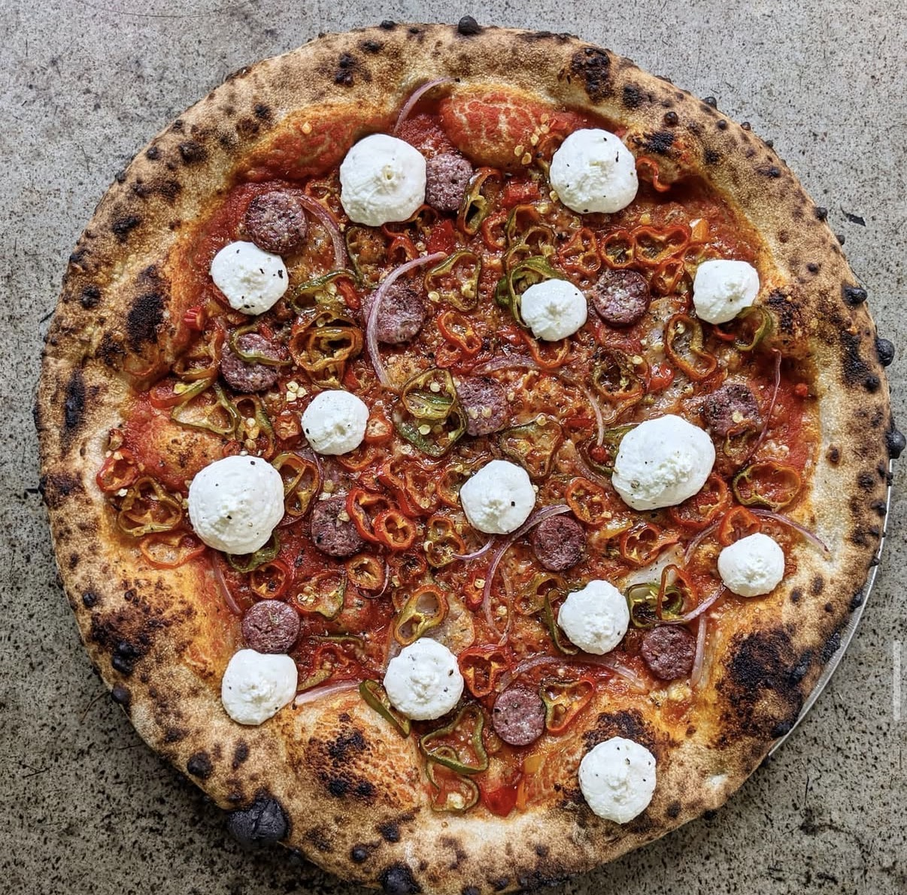

Chicken Marsala
Tender golden chicken cutlets, deeply browned cremini mushrooms, and a silky dry Marsala wine sauce that tastes like it took hours. One pan, 30 minutes, and a result that would be at home on an Italian restaurant menu.
↓ Jump to Recipe
Chicken marsala works because dry Marsala wine — a fortified Sicilian wine with a distinctive nutty character — creates a sauce that's complex and savory in a way that regular white wine can't match. Use dry Marsala (labeled "Secco"), never sweet Marsala (which is for desserts and will make the sauce cloying). The mushrooms must be browned hard and separately — wet mushrooms that steam never develop the flavor of properly seared ones.
Like chicken piccata, this dish hinges on thin, evenly pounded cutlets that cook fast and stay moist. The flour dredge creates the golden crust and slightly thickens the sauce as it releases back into the liquid during cooking. Two steps, one pan, one perfect dinner.
Ingredients
- 4 boneless skinless chicken breasts, pounded to ¼ inch
- ½ cup all-purpose flour
- 250g (9 oz) cremini or baby bella mushrooms, sliced
- 3 tbsp olive oil
- 4 tbsp unsalted butter, divided
- 4 garlic cloves, minced
- 180ml (¾ cup) dry Marsala wine
- 120ml (½ cup) chicken stock
- 2 tbsp fresh thyme leaves
- Salt and black pepper
- Fresh parsley, to finish
Instructions
- Pound and dredge. Pound chicken to uniform ¼-inch thickness. Season both sides with salt and pepper. Dredge in flour and shake off the excess.
- Sear the chicken. Heat olive oil and 2 tbsp butter in a large skillet over medium-high heat. Cook chicken 3 minutes per side until golden. Remove to a plate and keep warm.
- Brown the mushrooms. Increase heat to high. Add mushrooms in a single layer without stirring for 2 minutes. Let them brown before tossing. Add garlic and thyme, cook 1 more minute.
- Deglaze with Marsala. Pour in Marsala wine, scraping the bottom of the pan. Reduce by half, about 2 minutes.
- Add stock and finish. Add chicken stock. Simmer 3 minutes until sauce coats a spoon. Remove from heat, swirl in remaining 2 tbsp cold butter until glossy.
- Serve. Return chicken to pan, turning to coat with sauce. Plate with the mushroom sauce spooned over. Serve with egg noodles, angel hair, or mashed potatoes.
Chef's Pro Tips
- Always use dry (Secco) Marsala — sweet Marsala is for tiramisu and zabaglione, not savory cooking.
- Brown the mushrooms in batches if your pan is small — crowding means steaming, not searing.
- Make it creamy: add 4 tbsp heavy cream after the stock for a richer, more indulgent version.
- Marsala is a great pantry staple — it keeps nearly indefinitely and elevates dozens of dishes.